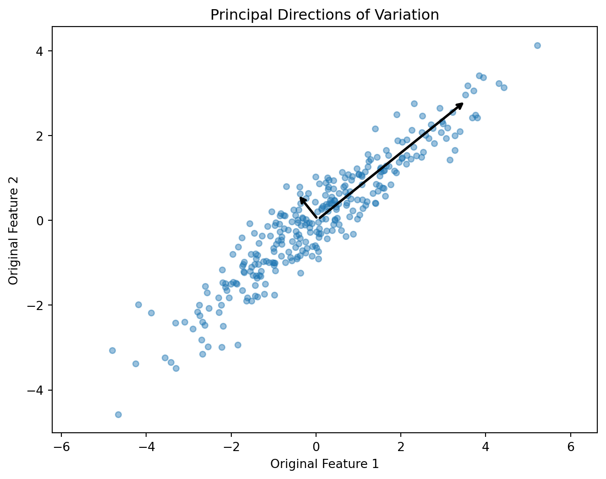
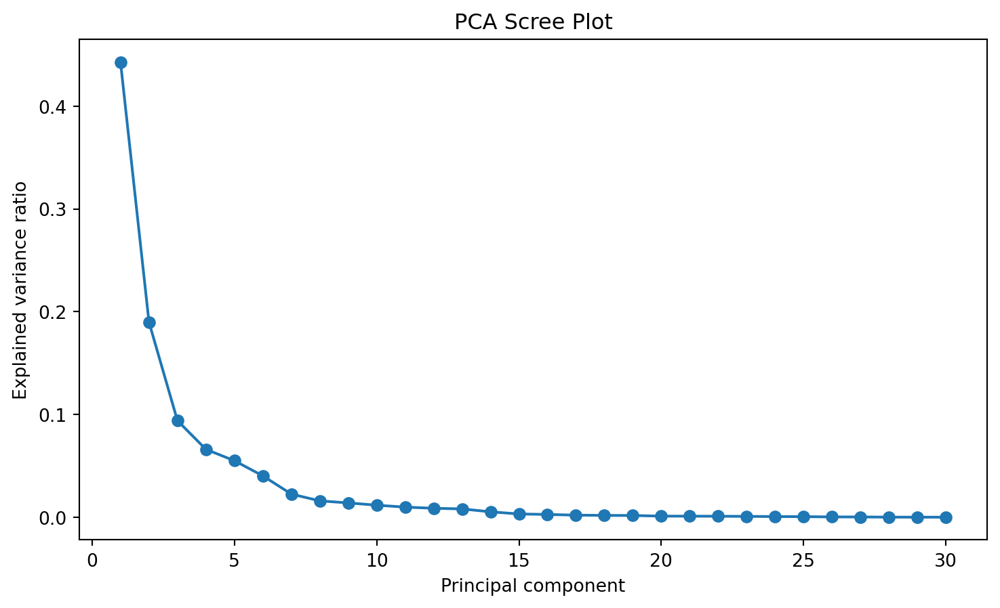
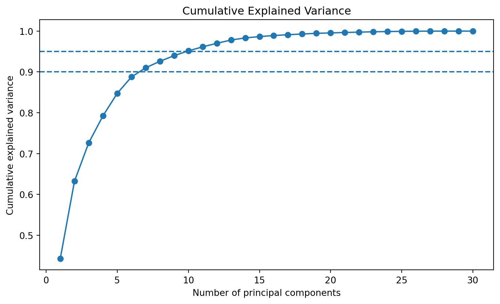
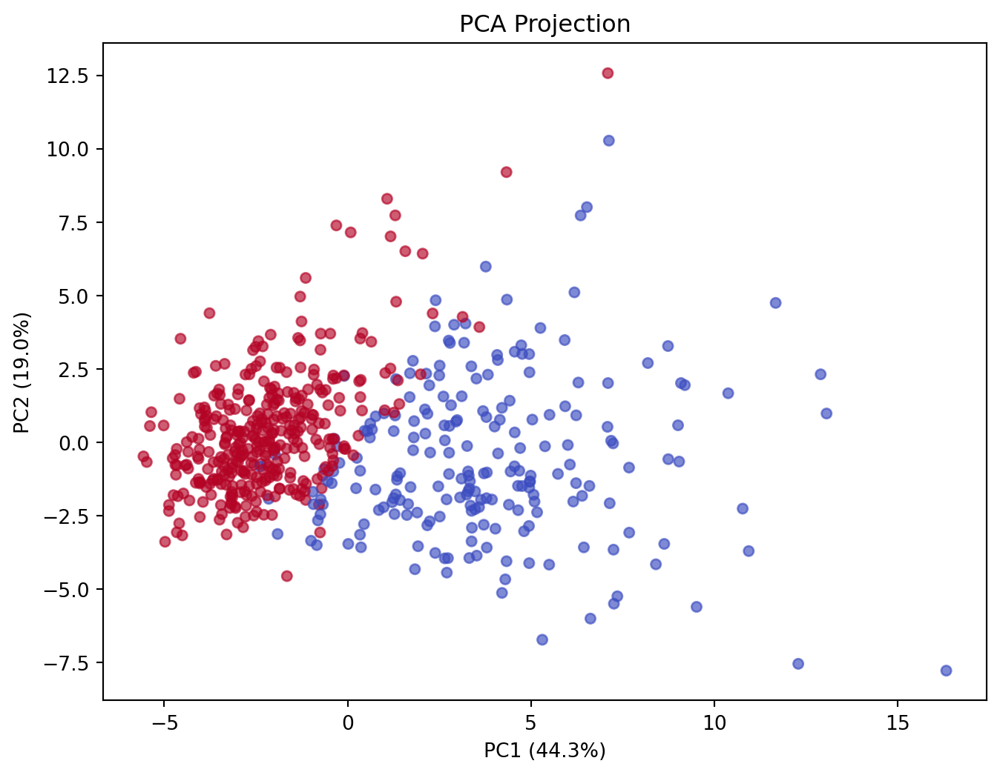
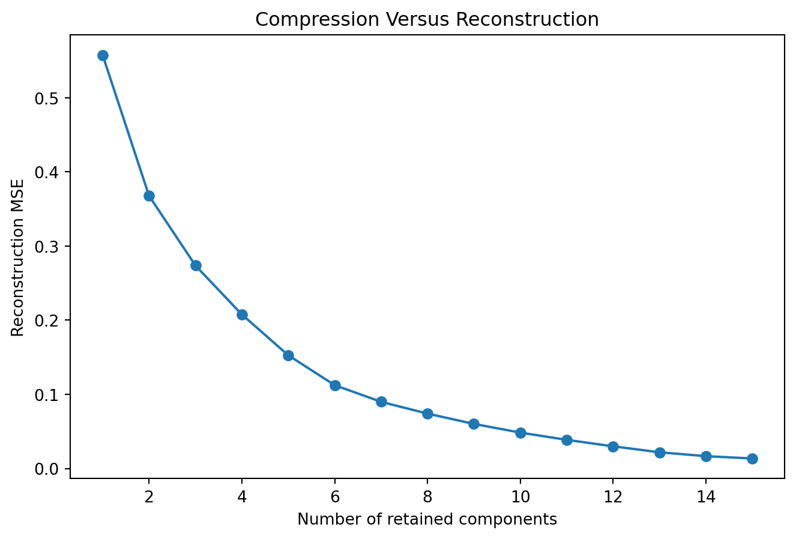
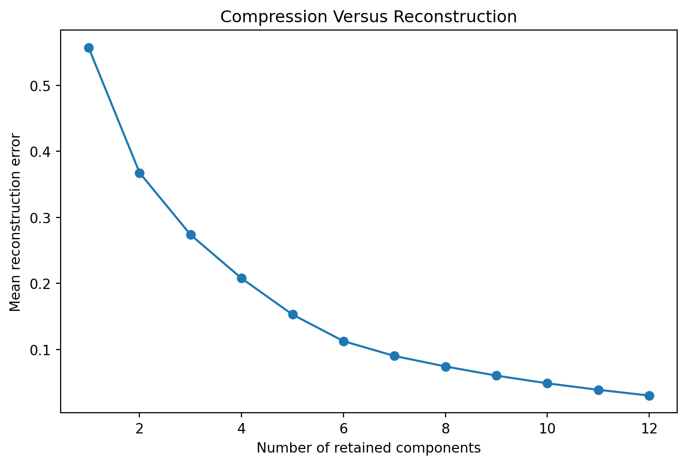
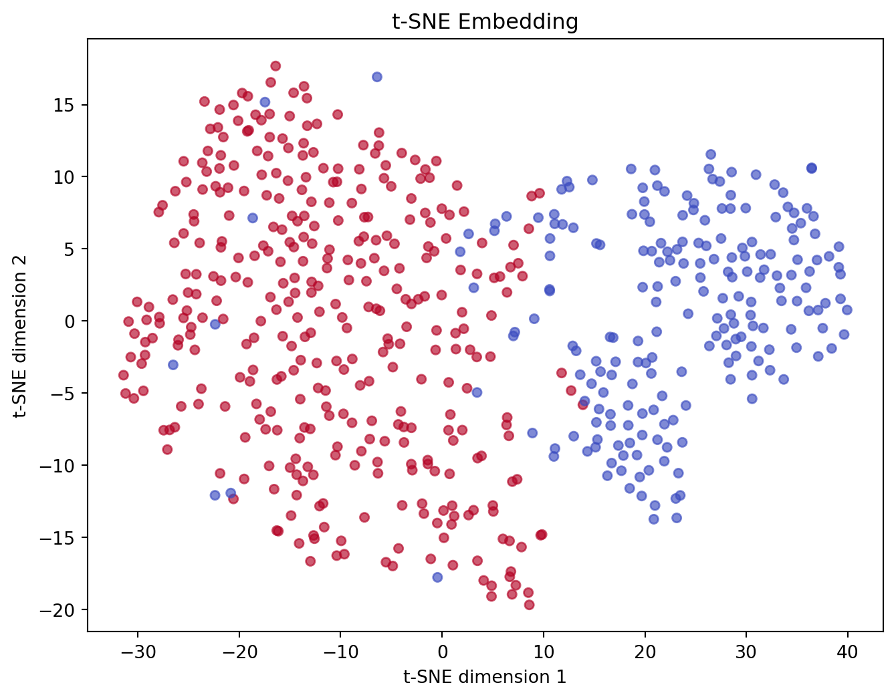
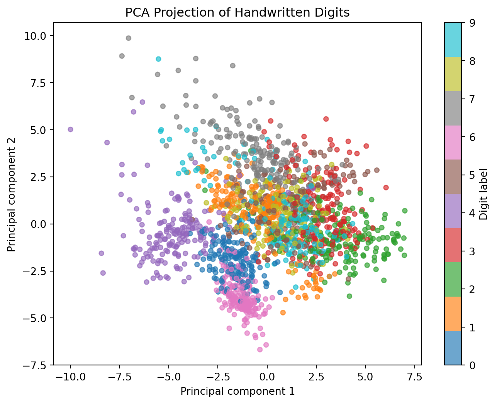

import numpy as np
X_small = np.array([
[2.0, 3.0],
[3.0, 5.0],
[4.0, 4.0],
[5.0, 7.0],
[6.0, 8.0]
])
np.cov(X_small, rowvar=False)array([[2.5, 3. ],
[3. , 4.3]])By the end of this chapter, you should be able to:
Modern datasets can contain hundreds, thousands, or even millions of features.
A document can be represented by thousands of terms. An image can contain millions of pixel values. Genomic data may contain tens of thousands of measurements. Learning-management systems can generate hundreds of behavioral indicators.
More variables can contain more information.
But more dimensions can also create:
Dimensionality reduction asks whether we can construct a smaller representation
\[ X\in\mathbb{R}^{n\times p} \quad\longrightarrow\quad Z\in\mathbb{R}^{n\times k}, \qquad k\ll p, \]
while retaining information useful for our purpose.
These approaches reduce dimensionality differently.
Choose a subset of the original variables:
\[ (x_1,x_2,\ldots,x_p) \rightarrow (x_2,x_5,x_9). \]
The retained variables preserve their original meaning.
Construct new variables from combinations of the originals:
\[ (x_1,x_2,\ldots,x_p) \rightarrow (z_1,z_2,\ldots,z_k). \]
PCA is a feature-extraction method.
The new dimensions are not usually identical to familiar substantive variables.
Imagine uniformly distributed points in increasingly high-dimensional spaces.
As dimensionality grows, data become sparse relative to the volume of the space.
Distance-based intuition can also weaken because nearest and farthest observations may become less distinct under some high-dimensional distributions.
This family of problems is often called the curse of dimensionality.
It does not mean that high-dimensional data are unusable. It means that methods, sample sizes, representations, and regularization must respond to the geometry.
Suppose three variables measure related aspects of academic engagement:
They may share substantial information.
Could a smaller set of latent numerical directions summarize much of their variation?
PCA answers this geometrically.
Principal component analysis has roots in Pearson’s geometric formulation and Hotelling’s statistical development of principal components (Pearson 1901; Hotelling 1933).
For a variable \(X\) with mean \(\bar{x}\), sample variance is
\[ s^2 = \frac{1}{n-1} \sum_{i=1}^{n}(x_i-\bar{x})^2. \]
Variance describes spread around the mean.
PCA seeks directions through multivariate space along which projected observations have large variance.
For variables \(X_j\) and \(X_k\),
\[ \operatorname{Cov}(X_j,X_k) = \frac{1}{n-1} \sum_{i=1}^{n} (x_{ij}-\bar{x}_j) (x_{ik}-\bar{x}_k). \]
Positive covariance indicates that the variables tend to increase together.
Negative covariance indicates opposing movement.
The covariance matrix is
\[ \Sigma = \begin{bmatrix} Var(X_1) & Cov(X_1,X_2) & \cdots\\ Cov(X_2,X_1) & Var(X_2) & \cdots\\ \vdots & \vdots & \ddots \end{bmatrix}. \]
import numpy as np
X_small = np.array([
[2.0, 3.0],
[3.0, 5.0],
[4.0, 4.0],
[5.0, 7.0],
[6.0, 8.0]
])
np.cov(X_small, rowvar=False)array([[2.5, 3. ],
[3. , 4.3]])Consider centered observations
\[ x_i-\bar{x}. \]
PCA finds a unit vector \(w_1\) such that the projected values
\[ z_{i1}=w_1^\top(x_i-\bar{x}) \]
have maximum variance.
The first principal component solves
\[ \max_{\|w_1\|=1} Var(Xw_1). \]
The second component finds the direction of greatest remaining variance subject to being orthogonal to the first.
Thus,
\[ PC_1\perp PC_2\perp\cdots\perp PC_p. \]
PCA does not simply delete dimensions.
It rotates the coordinate system and then allows us to retain selected directions.
For covariance matrix \(\Sigma\), an eigenvector \(v\) satisfies
\[ \Sigma v=\lambda v. \]
Here:
Sorting eigenvalues from largest to smallest gives the principal components in decreasing order of explained variance.
If
\[ \lambda_1\ge\lambda_2\ge\cdots\ge\lambda_p, \]
then the explained-variance ratio of component \(j\) is
\[ EVR_j = \frac{\lambda_j} {\sum_{k=1}^{p}\lambda_k}. \]
import matplotlib.pyplot as plt
from sklearn.decomposition import PCA
rng = np.random.default_rng(42)
cov = np.array([
[3.0, 2.4],
[2.4, 2.2]
])
X_geom = rng.multivariate_normal(
mean=[0, 0],
cov=cov,
size=300
)
pca_geom = PCA(n_components=2)
pca_geom.fit(X_geom)
plt.figure(figsize=(8, 6))
plt.scatter(
X_geom[:, 0],
X_geom[:, 1],
alpha=.45,
s=22
)
mean = pca_geom.mean_
for component, variance in zip(
pca_geom.components_,
pca_geom.explained_variance_
):
endpoint = mean + component * np.sqrt(variance) * 2
plt.annotate(
"",
xy=endpoint,
xytext=mean,
arrowprops=dict(arrowstyle="->", linewidth=2)
)
plt.xlabel("Original Feature 1")
plt.ylabel("Original Feature 2")
plt.title("Principal Directions of Variation")
plt.axis("equal")
plt.show()
The arrows show directions of variation, not causal effects.
Once the directions are estimated, observations can be transformed:
\[ Z=X_cW, \]
where \(X_c\) is centered data and columns of \(W\) contain selected principal directions.
Each row of \(Z\) contains the component scores for an observation.
Z_geom = pca_geom.transform(X_geom)
Z_geom[:5]array([[-7.22602736e-01, -4.31764942e-01],
[-1.74352843e+00, 3.50756872e-01],
[ 4.33914973e+00, -4.05706324e-01],
[-3.33703033e-01, -1.25759373e-01],
[-3.54877773e-03, -3.36444936e-01]])The component coefficients describe how original variables contribute to each principal direction.
In scikit-learn, components_ contains the principal axes.
pca_geom.components_array([[ 0.77976061, 0.62607778],
[-0.62607778, 0.77976061]])The sign of a principal component is arbitrary: multiplying an eigenvector by \(-1\) describes the same axis.
Therefore, do not attach meaning to component sign without considering the full loading pattern.
PCA based on the covariance matrix is sensitive to measurement scale.
Consider a variable measured in dollars and another measured on a 1-to-5 scale. The variable with much larger numerical variance may dominate the first components.
For many applications, we therefore standardize:
\[ z_{ij} = \frac{x_{ij}-\mu_j}{\sigma_j}. \]
PCA on standardized variables is closely related to performing PCA on a correlation matrix.
But scaling should be justified rather than automatic.
from sklearn.datasets import load_breast_cancer
from sklearn.preprocessing import StandardScaler
cancer = load_breast_cancer(as_frame=True)
X = cancer.data
y = cancer.target
scaler = StandardScaler()
X_scaled = scaler.fit_transform(X)
pca = PCA()
X_pca = pca.fit_transform(X_scaled)
pca.explained_variance_ratio_[:10]array([0.44272026, 0.18971182, 0.09393163, 0.06602135, 0.05495768,
0.04024522, 0.02250734, 0.01588724, 0.01389649, 0.01168978])This full-data transformation is used here for exploratory demonstration. When PCA is part of predictive modeling, preprocessing must be learned only from training data.
components = np.arange(
1,
len(pca.explained_variance_ratio_) + 1
)
plt.figure(figsize=(9, 5))
plt.plot(
components,
pca.explained_variance_ratio_,
marker="o"
)
plt.xlabel("Principal component")
plt.ylabel("Explained variance ratio")
plt.title("PCA Scree Plot")
plt.show()
A scree plot can help identify diminishing returns, but it does not provide a universally correct number of components.
cumulative = np.cumsum(
pca.explained_variance_ratio_
)
plt.figure(figsize=(9, 5))
plt.plot(
components,
cumulative,
marker="o"
)
plt.axhline(.90, linestyle="--")
plt.axhline(.95, linestyle="--")
plt.xlabel("Number of principal components")
plt.ylabel("Cumulative explained variance")
plt.title("Cumulative Explained Variance")
plt.show()
Thresholds such as 90% or 95% are conventions, not laws.
The right amount of retained variance depends on purpose.
A principal component explaining substantial variance captures a direction along which predictors vary.
It does not necessarily capture:
A low-variance direction can sometimes contain strong predictive signal.
Thus,
\[ \boxed{\text{explained predictor variance}} \neq \boxed{\text{outcome relevance}}. \]
plt.figure(figsize=(8, 6))
plt.scatter(
X_pca[:, 0],
X_pca[:, 1],
c=y,
cmap="coolwarm",
alpha=.65,
s=25
)
plt.xlabel(
f"PC1 ({pca.explained_variance_ratio_[0]:.1%})"
)
plt.ylabel(
f"PC2 ({pca.explained_variance_ratio_[1]:.1%})"
)
plt.title("PCA Projection")
plt.show()
The class labels are used only for coloring after the unsupervised PCA transformation.
PCA itself did not use \(y\).
import pandas as pd
loading_df = pd.DataFrame(
pca.components_[:3].T,
index=X.columns,
columns=["PC1", "PC2", "PC3"]
)
loading_df.loc[
loading_df["PC1"].abs().sort_values(
ascending=False
).index
].head(10)| PC1 | PC2 | PC3 | |
|---|---|---|---|
| mean concave points | 0.260854 | -0.034768 | -0.025564 |
| mean concavity | 0.258400 | 0.060165 | 0.002734 |
| worst concave points | 0.250886 | -0.008257 | -0.170344 |
| mean compactness | 0.239285 | 0.151892 | -0.074092 |
| worst perimeter | 0.236640 | -0.199878 | -0.048547 |
| worst concavity | 0.228768 | 0.097964 | -0.173057 |
| worst radius | 0.227997 | -0.219866 | -0.047507 |
| mean perimeter | 0.227537 | -0.215181 | -0.009314 |
| worst area | 0.224871 | -0.219352 | -0.011902 |
| mean area | 0.220995 | -0.231077 | 0.028700 |
A component may combine many correlated measurements.
Interpretation should consider:
If we retain only \(k<p\) components,
\[ Z_k=X_cW_k. \]
An approximation to the original centered data is
\[ \hat X_c=Z_kW_k^\top. \]
Information outside the retained subspace is lost.
pca_5 = PCA(n_components=5)
Z_5 = pca_5.fit_transform(X_scaled)
X_reconstructed = pca_5.inverse_transform(Z_5)
reconstruction_mse = np.mean(
(X_scaled - X_reconstructed) ** 2
)
reconstruction_msenp.float64(0.15265725683192763)This gives dimensionality reduction a concrete interpretation:
compression trades representational detail for simplicity.
component_counts = range(1, 16)
errors = []
for k in component_counts:
pca_k = PCA(n_components=k)
z_k = pca_k.fit_transform(X_scaled)
x_hat = pca_k.inverse_transform(z_k)
errors.append(
np.mean((X_scaled - x_hat) ** 2)
)
plt.figure(figsize=(8, 5))
plt.plot(
list(component_counts),
errors,
marker="o"
)
plt.xlabel("Number of retained components")
plt.ylabel("Reconstruction MSE")
plt.title("Compression Versus Reconstruction")
plt.show()
If PCA is part of a supervised-learning workflow, both scaling and PCA must be fitted inside the training pipeline.
from sklearn.model_selection import train_test_split
from sklearn.pipeline import Pipeline
from sklearn.linear_model import LogisticRegression
from sklearn.metrics import roc_auc_score
X_train, X_test, y_train, y_test = train_test_split(
X,
y,
test_size=.25,
random_state=42,
stratify=y
)
pca_logit = Pipeline([
("scale", StandardScaler()),
("pca", PCA(n_components=.95)),
("model", LogisticRegression(max_iter=2000))
])
pca_logit.fit(X_train, y_train)
pca_prob = pca_logit.predict_proba(
X_test
)[:, 1]
roc_auc_score(y_test, pca_prob)np.float64(0.9972746331236897)The test data did not influence the scaling parameters or principal directions.
Not necessarily.
Compare a logistic model with and without PCA.
plain_logit = Pipeline([
("scale", StandardScaler()),
("model", LogisticRegression(max_iter=2000))
])
plain_logit.fit(X_train, y_train)
plain_prob = plain_logit.predict_proba(
X_test
)[:, 1]
{
"Logistic regression":
roc_auc_score(y_test, plain_prob),
"PCA + logistic regression":
roc_auc_score(y_test, pca_prob)
}{'Logistic regression': np.float64(0.9976939203354298),
'PCA + logistic regression': np.float64(0.9972746331236897)}PCA can improve computational efficiency, reduce collinearity, or regularize a representation.
It can also discard predictive information.
It must earn its place empirically.
Dimensionality reduction creates a lower-dimensional representation
\[ X\in\mathbb{R}^{n\times p} \rightarrow Z\in\mathbb{R}^{n\times k}, \qquad k<p. \]
The purpose may be visualization, compression, denoising, feature extraction, or computational efficiency.
But reducing dimension means deciding what information should be preserved.
PCA identifies directions that capture large amounts of variance.
That is mathematically useful, but high variance is not synonymous with substantive importance.
A low-variance feature could still be:
Thus,
\[ \boxed{ \text{Variance Preserved} \neq \text{Meaning Preserved} } \]
import numpy as np
import matplotlib.pyplot as plt
from sklearn.decomposition import PCA
from sklearn.preprocessing import StandardScaler
X_pca_ic = StandardScaler().fit_transform(X)
max_components_ic = min(
X_pca_ic.shape[1],
12
)
components_ic = range(
1,
max_components_ic + 1
)
errors_ic = []
for k_ic in components_ic:
pca_ic = PCA(
n_components=k_ic
)
Z_ic = pca_ic.fit_transform(
X_pca_ic
)
X_reconstructed_ic = pca_ic.inverse_transform(
Z_ic
)
mse_ic = np.mean(
(X_pca_ic - X_reconstructed_ic) ** 2
)
errors_ic.append(
mse_ic
)
plt.figure(figsize=(8, 5))
plt.plot(
list(components_ic),
errors_ic,
marker="o"
)
plt.xlabel("Number of retained components")
plt.ylabel("Mean reconstruction error")
plt.title("Compression Versus Reconstruction")
plt.show()
Nonlinear methods such as t-SNE can produce compelling two-dimensional embeddings.
But:
\[ \boxed{ \text{Two-Dimensional Embedding} \neq \text{The Original Data Geometry} } \]
For t-SNE in particular:
A visually persuasive map is therefore an analytical representation, not direct observation of an underlying truth.
PCA is linear.
Many high-dimensional datasets may contain nonlinear structure.
Methods such as t-SNE and UMAP are especially popular for producing low-dimensional visualizations.
Their beautiful plots require careful interpretation.
t-distributed Stochastic Neighbor Embedding (t-SNE) seeks a low-dimensional representation that preserves local neighborhood relationships probabilistically (Maaten and Hinton 2008).
At a high level:
A common objective is based on Kullback-Leibler divergence:
\[ KL(P\|Q) = \sum_{i\neq j} p_{ij} \log \left( \frac{p_{ij}}{q_{ij}} \right). \]
The goal is not to preserve every original distance.
#| warning: false
from sklearn.manifold import TSNE
X_scaled_tsne = StandardScaler().fit_transform(X)
tsne = TSNE(
n_components=2,
perplexity=30,
init="pca",
learning_rate="auto",
random_state=42
)
X_tsne = tsne.fit_transform(X_scaled_tsne)
plt.figure(figsize=(8, 6))
plt.scatter(
X_tsne[:, 0],
X_tsne[:, 1],
c=y,
cmap="coolwarm",
alpha=.65,
s=25
)
plt.xlabel("t-SNE dimension 1")
plt.ylabel("t-SNE dimension 2")
plt.title("t-SNE Embedding")
plt.show()
The axes do not have the same direct interpretation as PCA axes.
Perplexity influences the effective neighborhood scale considered by t-SNE.
Different perplexity values can produce different visual structures.
Therefore, a responsible t-SNE analysis should examine sensitivity rather than presenting one attractive embedding as definitive.
A common misuse is:
That conclusion does not follow automatically.
The embedding itself was optimized to represent neighborhood relationships in a low-dimensional display.
Apparent visual clusters may depend on:
Uniform Manifold Approximation and Projection (UMAP) is another nonlinear dimensionality-reduction method widely used for visualization and representation learning.
Conceptually, UMAP attempts to construct a graph representing local high-dimensional relationships and optimize a lower-dimensional graph-like representation (McInnes, Healy, and Melville 2018; UMAP Developers 2026).
Two widely discussed parameters are:
n_neighbors — neighborhood scale;min_dist — how tightly observations may be packed in the embedding.UMAP is provided by the optional umap-learn package rather than core scikit-learn.
| Method | Main strength | Global geometry | Interpretability | Typical role |
|---|---|---|---|---|
| PCA | linear compression | relatively strong | comparatively high | compression, preprocessing, visualization |
| t-SNE | local visualization | weak | low | exploratory visualization |
| UMAP | local/manifold representation | partial | low | visualization, nonlinear representation |
No method dominates for every purpose.
The correct question is not:
Which one makes the prettiest plot?
It is:
Which representation preserves the information relevant to the analytical task?
Two-dimensional plots are cognitively powerful.
Humans readily see:
But a 2D embedding is a transformation of a much larger space.
Visual clarity can exceed evidential clarity.
This is especially dangerous when an embedding is colored by known outcomes after the fact.
A responsible dimensionality-reduction workflow should ask:
An (8) grayscale digit contains (64) pixel values. PCA can compress this visual feature space into fewer dimensions.
from sklearn.datasets import load_digits
from sklearn.preprocessing import StandardScaler
from sklearn.decomposition import PCA
import matplotlib.pyplot as plt
digits_pca_cv = load_digits()
X_pca_cv = StandardScaler().fit_transform(digits_pca_cv.data)
y_pca_cv = digits_pca_cv.target
pca_digits_cv = PCA(n_components=2)
Z_pca_cv = pca_digits_cv.fit_transform(X_pca_cv)
plt.figure(figsize=(8, 6))
plt.scatter(
Z_pca_cv[:, 0],
Z_pca_cv[:, 1],
c=y_pca_cv,
cmap="tab10",
s=20,
alpha=0.65
)
plt.xlabel("Principal component 1")
plt.ylabel("Principal component 2")
plt.title("PCA Projection of Handwritten Digits")
plt.colorbar(label="Digit label")
plt.show()
The colors were not used by PCA. They are added afterward to ask whether the unsupervised representation aligns with known semantic classes.
\[ \boxed{\text{Visible Separation in an Embedding}\neq\text{Perfect Class Separability}} \]
Compare this PCA representation with the t-SNE example already in the chapter. Ask which structure each method preserves, which patterns remain ambiguous, how sensitive the display is to analytical choices, and whether conclusions would survive a change in image source.
The goal is not to select the prettiest plot. The goal is to understand what each representation preserves.
PCA can summarize correlated biomarkers or physiological measurements. Nonlinear embeddings can visualize patient heterogeneity. But a visual patient subgroup is not a diagnosis. External clinical validity, stability, calibration of downstream models, and population transportability remain necessary.
Health: compression may obscure rare but clinically important signals.
Dimensionality reduction can summarize correlated engagement indicators, survey scales, or learning behaviors. A two-dimensional student map can support exploration, but spatial proximity does not automatically imply equivalent learning needs or justify intervention.
Education: components explaining large overall variance may not preserve information relevant to smaller student populations.
High-dimensional benchmark datasets allow controlled comparison of retained variance, reconstruction, predictive performance, neighborhood preservation, runtime, and sensitivity to embedding parameters.
Open ML: visualization can help exploration, but apparent clusters should be validated in the original feature space or with independent evidence.
Give an AI assistant a two-dimensional t-SNE plot containing three visually separated regions.
Tell it:
“The t-SNE plot clearly proves that our population consists of three biologically distinct patient types.”
Audit the response.
A strong critique should ask about:
Rewrite the claim into defensible scientific language.
Using a health, education, or benchmark dataset:
A practitioner should be able to use PCA for compression and preprocessing, select dimensionality based on task requirements, build leakage-safe pipelines, and treat nonlinear embeddings primarily as exploratory representations.
A researcher should additionally examine loading stability, sensitivity to scaling, reconstruction, parameter sensitivity, replication, downstream inferential consequences, and whether visual structures support substantive claims.
Design a dimensionality-reduction study suitable for a conference or journal paper.
Specify:
Researchers collect 150 behavioral variables from 8,000 university students.
They standardize the variables, run t-SNE once using default settings, and obtain four visually separated islands.
They name the islands:
They report:
“Machine learning discovered four naturally occurring student learning styles.”
The university proposes assigning students to different curricula based on the visualization.
Critique:
Design a stronger research program before any curricular assignment.
Record:
Dimensionality reduction makes representation explicit: what a model can learn depends on what information its representation preserves. Chapter 13 extends that idea from constructed low-dimensional representations to learned representations, showing how neural networks build increasingly useful internal features through layers, nonlinear transformations, and optimization.